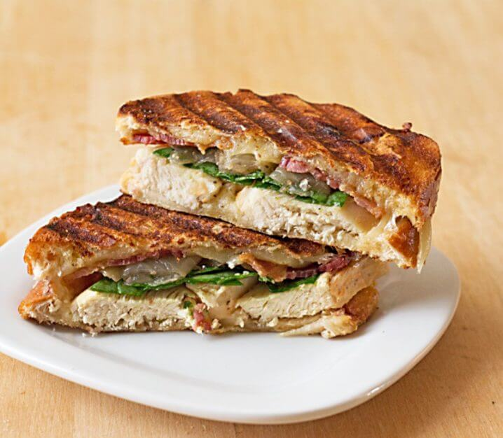

Chicken Panini

A Sandwich Press Deluxe Recipe
- Prep Time: 5 minutes
- Cook Time: 5 minutes
- Serves: 1
Ingredients:
- 2 slices of hearty bread
- 2 ounces cooked chicken breast (preferrably rotisserie)
- 2 slices cooked bacon (optional)
- 1 Tablespoon olive oil
- 2 Tablespoons caramelized or grilled onions
- 6 baby spinach leaves
- 2 slices of cheese (your choice)
Directions:
- Lightly grease inside of a panini press or pan with olive oil. Preheat panini press or pan while you assemble your sandwich.
- Brush olive oil onto one side of both slices of bread.
- Onto the dry side of one slice, layer chicken, onions, bacon, spinach, and cheese. Top with remaining slice of bread, coated side up.
- Place sandwich into panini press and close lid (or weigh it down in a pan). Grill for 2-3 minutes or until sandwich has compressed, bread is grilled, and cheese has melted.
Return to top
Return to main page